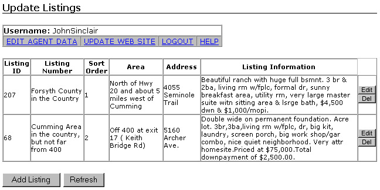
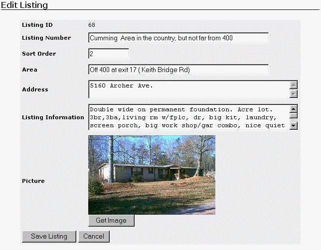
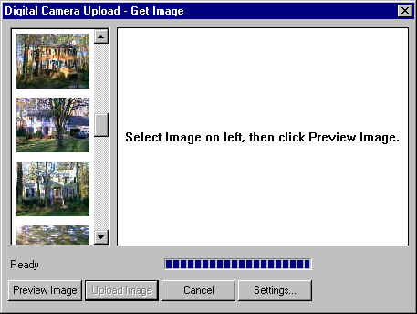
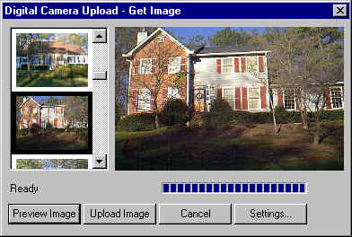

With a digital camera, it's easy to take digital pictures. But it's not so easy to get those pictures online.
The Image Upload Control makes it easy for a user of any ability to upload pictures from their digital camera and other sources into your web application.
Here is a simple example:
| In this screen, a user selects an item to edit or clicks Add Listing to create a new item to the list. |  |
| When the user adds or edits a listing, this screen allows them to update the associated text and image. To upload a new picture or update an existing picture, the user plugs in their digital camera (via USB) then clicks Get Image. The screen shots below show what happens next. |  |
| After the user clicks Get Image, this window appears. The program automatically locates the camera - the user does NOT have to "browse for folder". A list of thumbnails is created and presented for selection. The user selects the desired thumbnail then clicks Preview Image. |  |
| In the preview, the image is seen at the size it will be on the web site. Most digital camera images are too large for web sites, so the program automatically adjusts the image to the size specified by the web site's designers. |  |
| Finally, the user clicks Upload Image to send the image to the web site. Because the size of the image is adjusted before the image is sent, sending an image only takes a few seconds over a basic modem Internet connection. | |
For more information, please contact:
P.J. Tezza
pj@t3city.com
678-268-4063x913